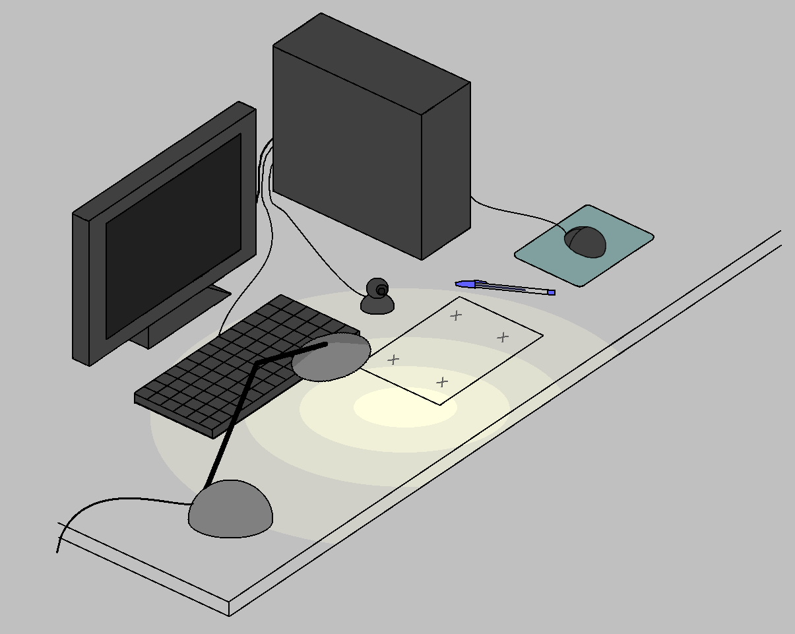

(ENGLISH | PORTUGUÊS)

WebcamPaperPen

WebcamPaperPen (WPP) é um software de visão computacional criado para controlar o cursor do mouse utilizando uma caneta de tampa azul tipo BIC, de forma parecida com uma mesa digitalizadora.
Você só precisa de:
1) papel
2) caneta de tampa azul
3) webcam postiça
4) luminária

WebcamPaperPen foi o projeto final de Gustavo Pfeiffer em Engenharia de Computação, desenvolvido no LCG-UFRJ entre 2013 e 2014. Foi também apresentado no SIBGRAPI 2014 (artigo, apresentação, vídeo, mat. supplementar).
Download
Versão para Windows
Download - Versão mais recente (2015-03-17).
Antes de experimentar o WPP, não esqueça de ler as instruções de configuração.
Versão para Linux (Ubuntu)
Para instalar em Linux, você pode baixar o nosso código e compilá-lo (veja abaixo, seção Código Fonte).
Instruções de Configuração e Problemas Frequentes
Download
Código Fonte
https://github.com/guthpf/WPP
Para compilar em Windows, você vai precisar de:
Para compilar em Linux (Ubuntu), você vai precisar de:
- Qt4 e QtCreator (apt-get install libqt4-dev qtcreator)
- Eigen (apt-get install libeigen3-dev)
- OpenCV (apt-get install libopencv-dev)